A node is the main service provider in the StreamOnTheFly network. It is basically a digital library, enhanced by streaming and other radio-centered functionalities. A node:
Nodes are transparently organized into a etwork. All nodes have metadata about all radio shows and stations in the network. Nodes communicate with each other to keep their local database up-to-date.
A station is archived at a single node, while it is searchable and browseable
by all nodes in the network. Each station has admins and editors. Admins may
change logos and jingles and manage all data, while editors can upload shows
and manage their own data.
more Infos about the stations here
For each radio show a set of metadata is required from the editors (title, keywords, length, etc.). The set of metadata elements is to be agreed within the radio community. A recommendation for XML-based storage and exchange of these metadata has also been prepared, see SOMA and XBMF.
Portals are loosely coupled with nodes. A portal can embed radio shows manually or automatically into its content. Streaming of these shows is done by the node, and feedback about the show is propagated back to the node. You can try out all of these tools at our demo site.
The Interface of StreamOnTheFly is devided into four sections.
The Header: In the top area of the interface, SOTF provides
you with the possibility to change the interface language. This setting does
not change the content language itself. It just changes the wording in the interface.
Right now one can choose between English, French, Hungarian, and German.
The Main Menu: Below this section you find the main menu of SOTF. Depending on your permissions, you get different menu items. (The possible menu items and their functions are described below.)
Left Section: This section is separated into 3 boxes: Login/Personal, Statistics about the node network, My Playlist (if you created one), and the contact data of the running node.
Middle Section: In this area SOTF shows you the actual content in a listing. You will see the last 10 entries of content.
Right Section: Like the left part, the right area is divided into boxes: first, you find a shortcut to the complex search engine; in the second box you can choose between the stations connected to the node network to get their content only. In the last box, SOTF displays the topic ontology and shows you a number of programmes related to the topic.
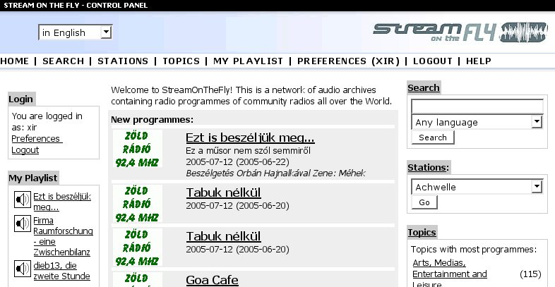
Abb.: The SOTF main interface
SOTF offers all users free registration for personalized features in the node network. To reach the registration interface, click the 'register' link below the login section (left) in the main interface. You will have to provide some basic information:
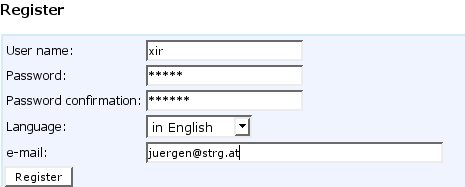 Abb: Registration Form |
The 'preferences' section is used for authenticated users to change their personal settings. It offers the same options as the registration form. Just click the 'Preferences' item in the main menu to access this interface. |
In the right section of the main interface you will find a box marked “Search”. Enter your search keywords here and choose a language to qualify the search results. Of course you can also leave the language the way it is and search without restrictions. In the image below you see the results of an easy search for the keyword 'tabuk':
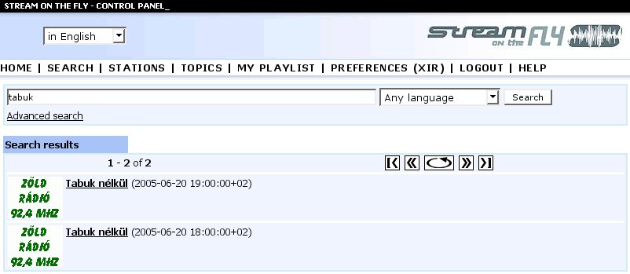
Abb:Easy search results
Inside the search results interface you can redefine your queries by displaying the keywords you used. The results are displayed in pages with 10 items each. You can switch between the pages in both directions.
The box marked as “Stations” is responsible for the station search in the SOTF network. Choose a station, and for a result you will get all data about this station, the provided series, and all programmes related to this station. As usual, the result items are displayed in pages with 10 items.
SOTF provides a general ontology to categorise and organise programmes. For
a fast search on topics you can just click on one of the main-topics in the
right section of the main interface. The number in brackets states the amount
of programmes related to one of the chosen sub-topics. If you mouseclick on
one of the main topics listed in this box, you will get an interface with the
sub-topics and the programmes directly related to the main topic. The interface
creates a frameset to display the results and the available topics in one.
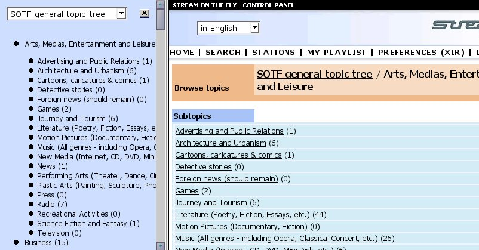
Abb:Results from Topic Search
In the left section of the interface you see the entire listing of topics currently available. At the top end of this listing you can choose the topics you want. Click the [x] to switch back to frameless view. In the right section you see the main topic you have chosen and all sub-topics related to it. In brackets you see the number of programmes associated with this sub-topic. Click on an entry to get a list of relevant programmes.
You access the advanced search engine by a mouseclick on “search”
in the main menu. This interface provides you with a way to create a complex
SQL (structured query language) statement to run it against the node network.
You can redefine, store, and manage all the queries you created.
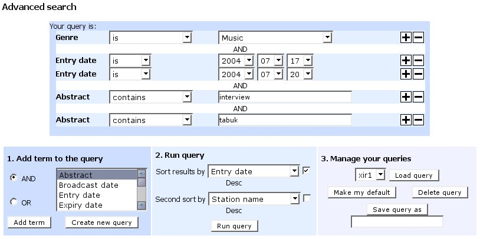
Abb: Advanced Search EngineThis is the most complex part of the SOTF interface, and it contains a lot
of technical terms. However, it should be easy to go through this page if you
are generally familiar with the terminology, syntax, and basic functions of
SQL.
In the first part you see the actual query for this search. You can add and
remove directives using the '+' and the '-' button. The search displayed in
this example would do the following:
First, it would collect all programmes related to the genre 'Music'. The next
statement is connected to this result and adds a new clause using 'AND'. There
are two ways to connect the statements: 'AND' and 'OR'. The connector AND would
mean that both clauses needs to be true. OR would mean that any one of the connected
statements needs to be true. Next in the example is the entry date. As you see,
there are two statements under this name without connector. In the SOTF interface,
OR is not displayed! The search would include all items with an entry date "2004-07-17"
or "2004-07-22". In addition, the abstract of the item needs to contain
the keywords 'interview' and 'tarbuk'. At the end of the query, one would get
a result including all programmes where this query has "true" for
a result.
| Add term to the query | |
| 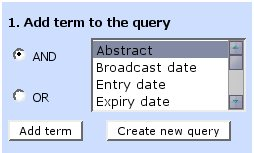 | The first (left) box is used to add a new term to the query or to create a new query. The terms AND and OR are the logical connectors between your statements. Choose the field you want to search and add it to your query using the AND or OR statement. |
| Run query | |
| 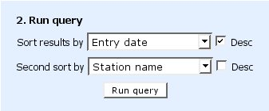 | In the second (middle) box you can set choose two of the available terms by which to sort the results. Desc stands for "descending". The default sorting order is ascending. |
| Manage your queries | |
| 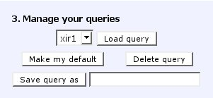 | In the third (right) box you can manage your queries. You can save the query by a given name and reload it later. You can set a query as default to get the results displayed when you return to the node network. |
As we have seen, you can access the programmes by different ways. You can search using different search engines or you can just click on the programme items on the start page. In the interface of a programme you get all the meta-information, some additional data such as images, documents, and links, and the actual content itself. Here you can also upload the programme to your personal SOTF portal or add it to your playlist. You can also access feedback and statistics relevant to the programme. Most of this interface should be self-explanatory.
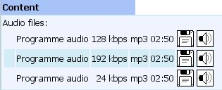
This is the content section of a programme. SOTF offers different quality levels on all programmes (depending on configuration). You can download the files or directly add them to the playlist of your mp3/ogg player. Depending on the configuration, the node creates mp3 or/and ogg files. In the listing you see the quality level, the type, and the duration of the file.
This is the last part in the programme interface. You see the feedback and statistics about the files. You can rate this programme, put it into your playlist and/or upload the programme to your portal.
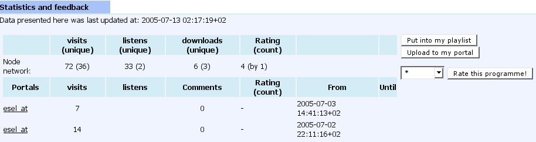
Abb: Feedbacks and Statistics
This feature is very useful for users who want to listen to several audio files at once. It is only available to registered users. As we have seen in the programme interface, you can add programmes to your playlist. You get the results in the left section of the main interface.
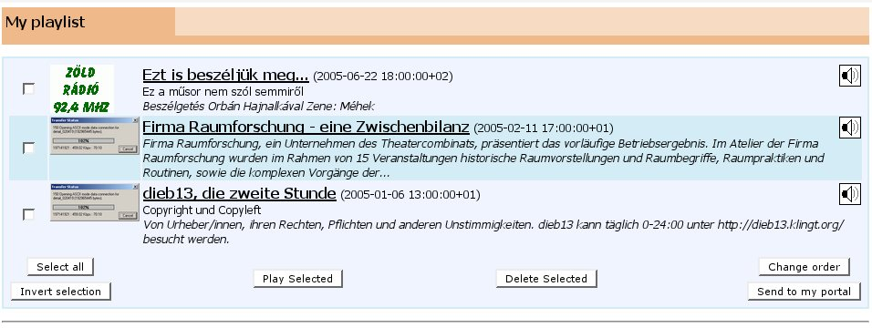
Abb: My Playlist
You will find the main information about the programmes in your playlist. The interface provides you with links to the programme interface. We you click the speaker symbol on the right, your local mp3 player should play the sound (depending on your local settings). You can select several items and use the button 'play selected' to send all the files to your player. Also, you can send the selected items to your portal (if you have created one). You can change the order of your playlist items using the 'Change Order' button. It offers you a popup window in which you can move the items up and down according to your needs.
SOTF offers RSS Feeds and PODCAST structures for all content items and lists.
Just click on the link in the top right area of the interface. You can use this
feature to connect the SOTF node with other software such as RSS readers and
applications which are able to use RSS Feeds.
A special case of RSS is the PODCAST feature. This makes it possible to connect
SOTF series and programmes to the podcast network. Just click on the respective
links to get the RSS Feeds returned in your browser. You can use this links
for usage in other applications.
The Station is connected to a single node. Since SOTF is a node network, one
can browse and search all content coming from a certain station through all
other nodes in the network. A station has administrators and editors. Administrators
are able to edit metadata, upload logos and administrate all programmes of the
station. The editors are responsible for the programmes and are able to edit/upload
data for programmes.
The content of a station generally is structured in programmes and series. A
series (in these terms) is a format for programmes with changing but similar
content, usually broadcast at a specific time each day or week. A series links
individual programmes. (The format is defined by the broadcasting stations themselves
and must therefore not fit this description exactly). The actual programmes
in a series are the broadcastings (including audio files).
Click on 'Stations' in the main menu to get a list of all stations connected
to the node network. In the top section of this interface you can change the
order of the displayed stations and set filters on languages. Apart from these
possibilities you find the paging buttons. As usual, SOTF returns you 10 items
per page. You can scroll through the pages using this buttons.
In the result list you get a list of series connected to this station together
with some meta-information. The number in brackets states the number of programmes
included. Below the series you get the list of programmes. Again, you get ten
items displayed per page – please browse through the pages to get a full
overview.
Click on 'Topics' in the main menu to get a full list of topics and their related
programmes.
Topics in SOTF are a sort of ontology to structure programmes by their content.
There are two subject trees available: 'SOTF general topic tree' and 'SOMA metadata
version 1'.
As we have already seen in the search section of this document, you get a split
interface. In the left section you see the topic tree with all sub-topics and
the number of related programmes. In the right part you get a list of sub-topics.
When you click the sub-topics, SOTF returns you a list of related programmes.
how to search for topics
In the Editor´s Console station editors can upload files per FTP or HTTP, and add appropriate metadata.
UPLOAD VIA FTP:
Much faster than HTTP - Upload, but needs an extra client, like SmartFTP (download). Another advantage is the resumability of uploads.
To access your personal SOTF directory, use the URL of your node and type in your personal access data in the FTP client.
UPLOAD VIA HTTP: (use link "Manage your files")
Comfortable web interface for adding and deleting files (no extra software required), but may cause problems when transferring larger files.
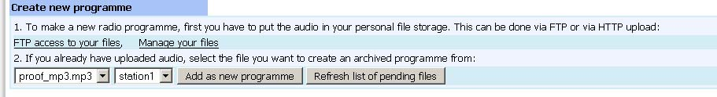
Abb: Create new programme / file upload